Since the O trek in Torres del Paine, it has felt like our hiking escapades have only escalated which was rather unexpected. We flew into Bariloche from El Calafate after taking a bus from El Chaltén and were confident that our long strenuous hiking days were coming to a close for the time being. How wrong we were!
We went into Bariloche reading that it was quite a bit more touristy than the other locations we had visited to date in Argentina. Bariloche is the main town in Argentina’s “Lake District” and true to its name, has many gorgeous lakes, the main one being the glacial lake Nahuel Huapi, nearby where one can enjoy the beach, participate in various water activities, and camp near the shores. These lakes attract visitors near (Argentinians and other visitors from South America especially Brazilians and Chileans) and far (like us!) during the summer. The town itself is quite a bit more built out than either Calafate or Chaltén which was a welcome change, even just to have Wifi readily available. And we enjoyed some top notch chocolate from two wonderful chocolate shops (we made three chocolate shopping stops in our short time in town).
>
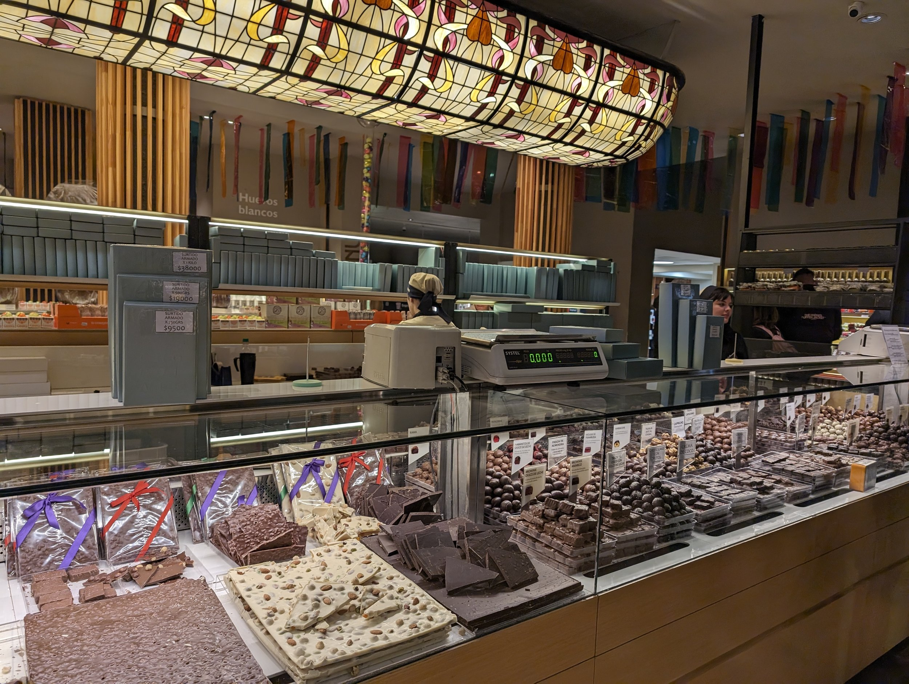
Bariloche also boasts beautiful mountains nearby as it is still part of Patagonia. These mountains turn the town into a ski haven in the wintertime that attracts ski and snowboard enthusiasts. And of course during the summertime (and now autumn!), the same mountains attract hiking enthusiasts. Are we hiking enthusiasts now?
>
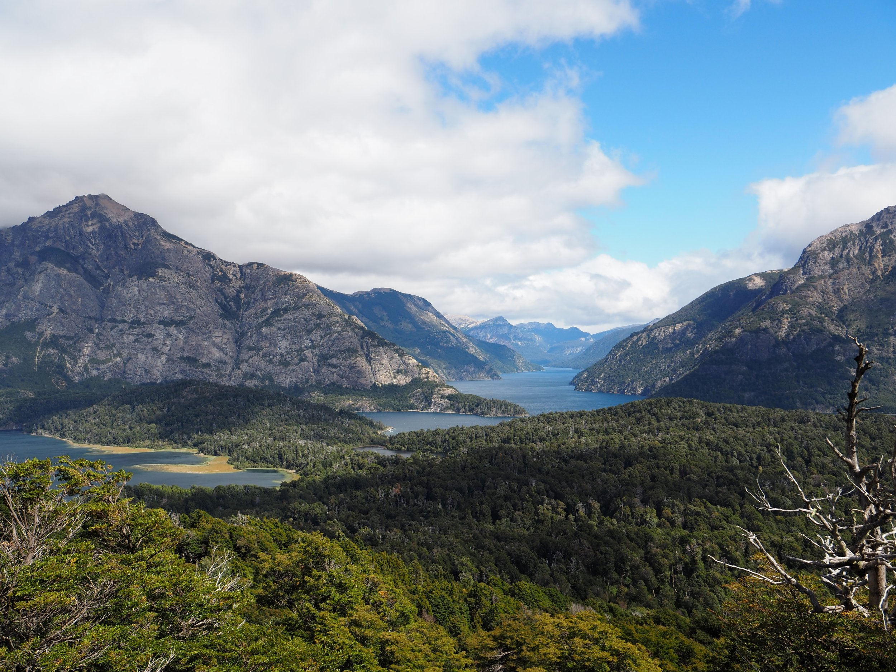
Before we embarked on even more hiking adventures, we decided to spend our first day doing “Circuito Chico” by bicycle. It’s not a very long loop (~27 kilometres), but the path has several stops where we could get off and explore beaches, do short hikes, and even stop for food/beer if so inclined. We saw some really cool wildlife including ashy-headed geese (they look like wooden geese to me!) and a fox. We also did a small hike up a “Cerro” (peak) and the views were well worth the straight up-hill climb.
>
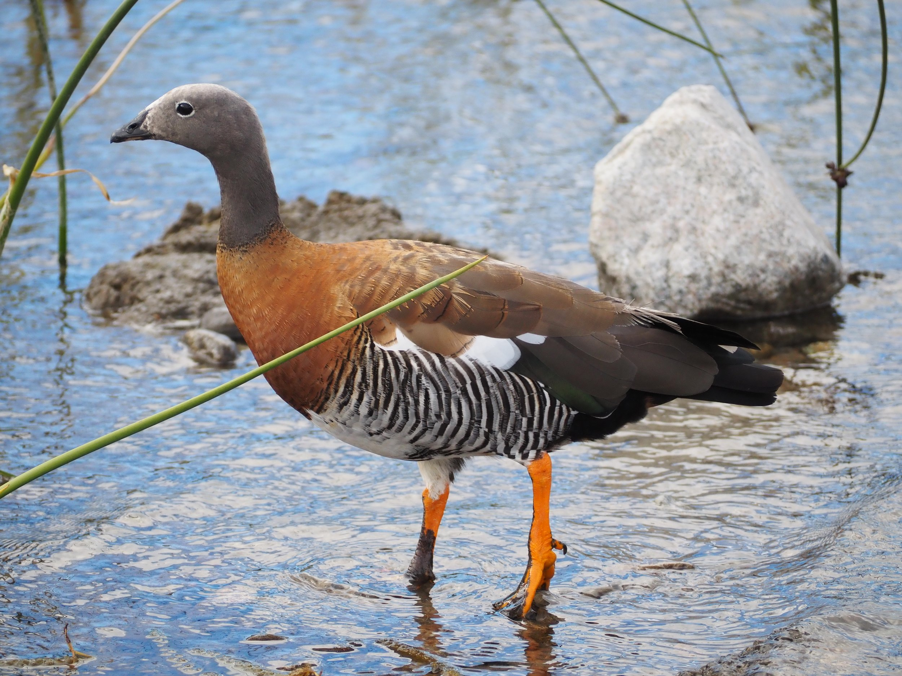
>
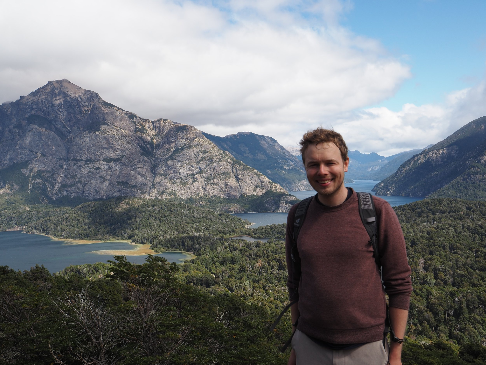
We retired back to our Airbnb where we once again lucked out with a studio apartment that had a stunning view of the lake. We enjoyed eating dinners on the table facing the lake and waking up every morning and seeing the lake first thing in the morning since the foot of the bed faced the lake.
>
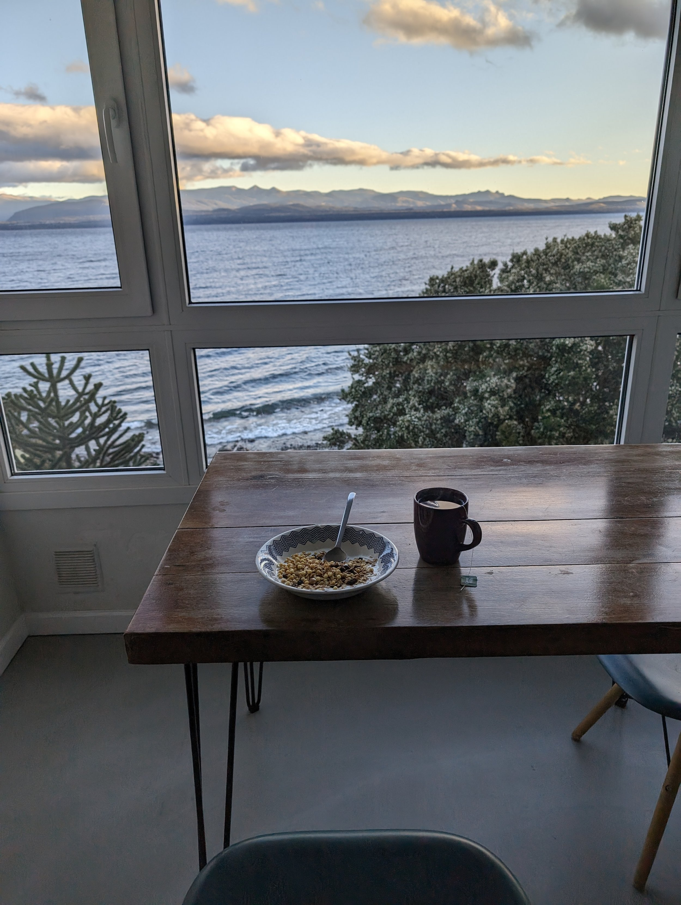
On day 2 in Bariloche, we went on the first hike that defeated us. Cerro Cathedral is (I believe) more well known as a ski resort but in the summertime, the snow melts away and the mountain becomes one where you can hike up and over the peak to a refugio (Refugio Frey) on the other side. Theoretically, you can either hike back in a loop that traverses around the mountain (instead of up and over the mountain) in one day, or you can choose to spend a night in the refugio and hike back the following day for a more relaxed experience. We decided to hike the route that goes up and over the mountain to the refugio.
One of the cool parts of the “up and over” route is that they keep open a couple chairlifts that take you most of the way up the mountain so that getting to the peak only takes about 30 minutes. And a big bonus is that you get to skip a lot of the altitude gain — about 90% of it is done via the chairlifts. On this particular day, we arrived bright and early to the ski resort and found it nearly completely deserted save for an unusually large group of trail runners at the base (more on that in a bit!). We roamed around the base area looking for what to do and ran into a trio who were searching for the same chairlifts. With their help, we found the ticket office and waited around for another 10-15 minutes until it opened at 9am. We met our first roadblock: one of the workers at the resort let us know that the usual chairlifts were not running but a farther away chairlift was going instead. Instead of the usual 30 minutes to the trailhead, we could have to get off the running chairlift, hike up 30 minutes to a refugio at the top and then traverse over another hour to get to the trailhead. An hour more seemed doable!
>
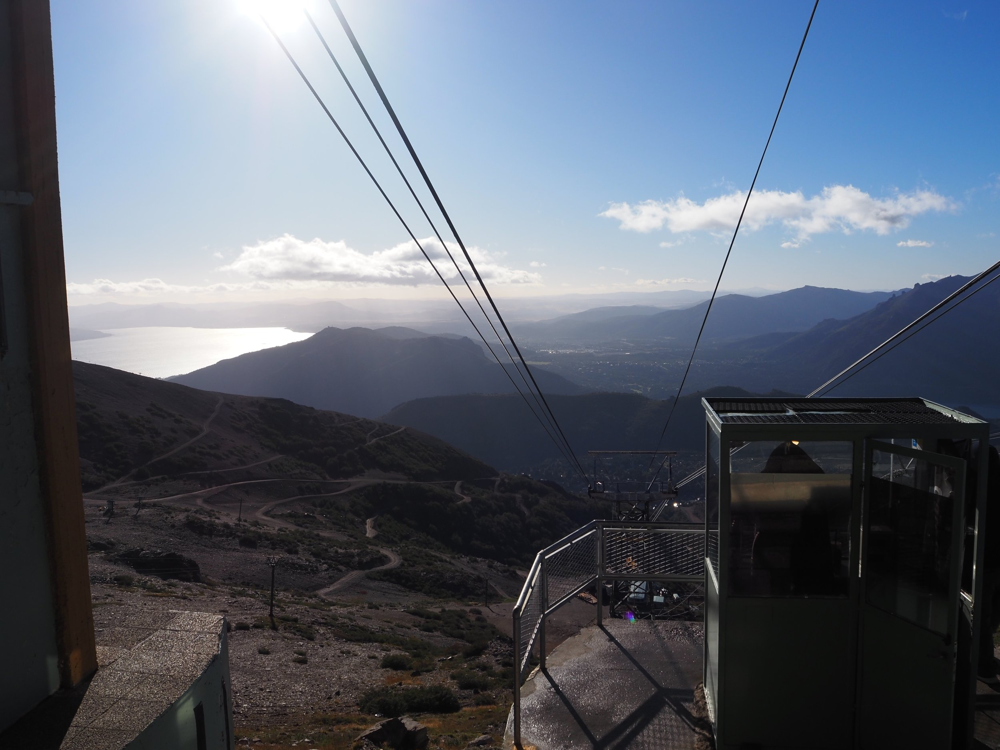
A quick aside on hiking in Argentina. We’ve noticed a difference in our experience hiking in the US versus in Argentina (and Chile for that matter). Argentinians have more of a preference to continue to have their homely comforts while hiking and don’t care as much to do huge mileages in a day. There are refugios throughout all the national parks where you can stay a night, sleep in a proper bed, and get hot meals. Kevin and I typically make sandwiches and pack snacks in the morning that we eat for lunch, but a hot lunch is readily available if you pass any of the refugios and are not too expensive either. These refugios are almost always located in very picturesque locations as well that allow you to explore alpine lakes, forage for seasonal berries and just enjoy the slower pace of life.
>
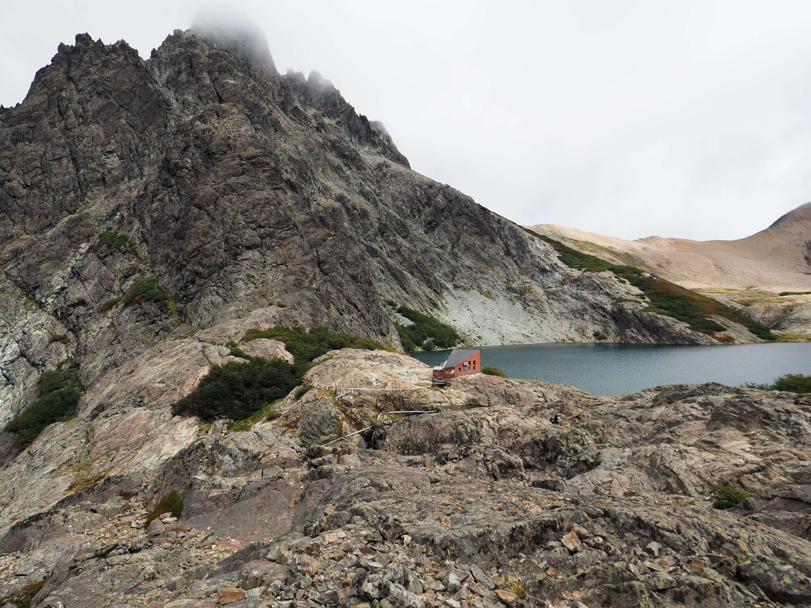
Anyways, back to the story! We went up the chairlift uneventfully (though standing in a gondola without skis and ski boots felt awfully weird!) and managed to get to the refugio. At this point, it wasn’t exactly clear how to traverse over. This was a ski resort after all, not necessarily an area with marked hiking trails, so we starting walking along the ridge knowing that we needed to get over to a peak called “Punta Princessa” which thankfully was also the name of a chairlift so we could using the ski trail signs to roughly know when we arrived. There were areas of this part of the hike that definitely required putting away the hiking poles and clambering over rocks to continue along the path. Occasionally we would see some faded colored dots that also greatly helped highlight the path. And eventually we did arrive the trailhead!
>
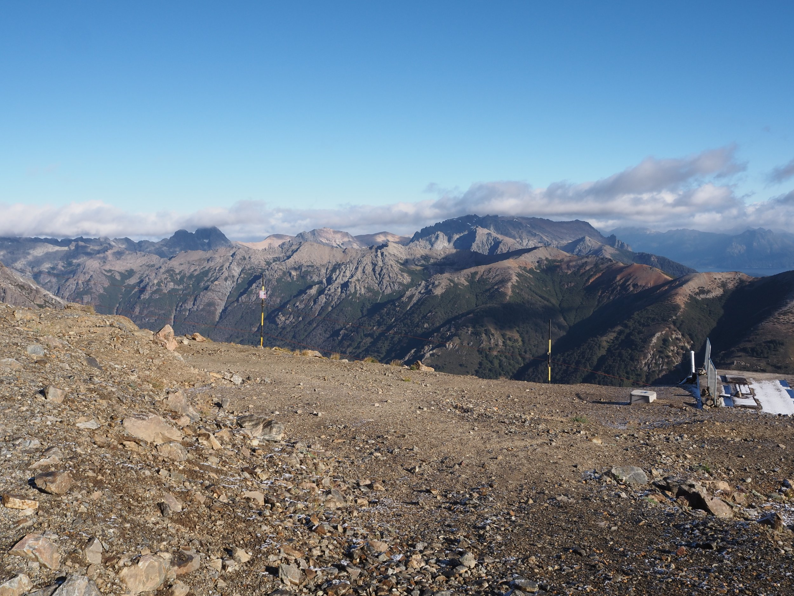
We peeked over the ridge and holy macaroni — the trail turned into a 2 foot width snowy path cutting through a steep mountain that definitely elevated my heart rate for both its terrifying nature and its beauty at the same time. We started slowly descending down and traversing the ridge, taking extra care as to not slip in the snow. We at least managed to take a few pictures because the view from this ridge was unreal. Within about 15-20 minutes, we reached a large scrambling area without a clear view of the trail beyond.
>
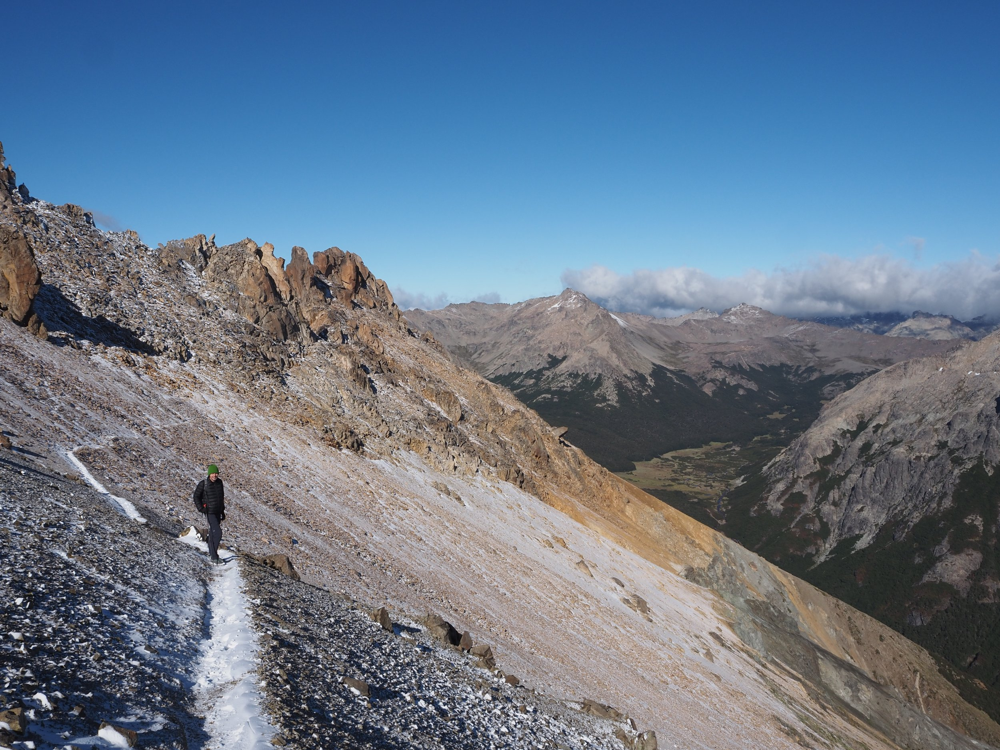
>
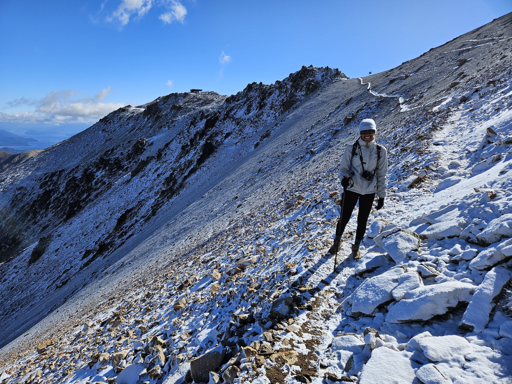
And so we finally decided to turn back. I was particularly uncomfortable with the idea of having to climb/scramble rocks in the snow and we still had most of 4 hours of this hike to go before reaching the refugio. It wasn’t clear if or when the sketchy scrambles might end. We made our way back along the ridge and navigated over to the gondola as one might do during skiing, walking down ski runs that traversed over, attempting to navigate using Google Maps. We finally made it over, enjoyed a leisurely lunch at the top of the gondola since we suddenly had so much time to kill left in the day, and took the gondola back down. What an adventure!
>
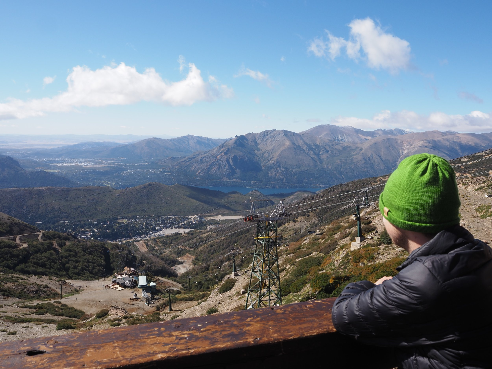
We ended up doing Cerro San Martín which was nearby a bit later which was also so beautiful but one day, I’d like to come back to try the trail again… though perhaps when there isn’t as much snow and maybe with a different pair of shoes that is more designed for climbing easily. It’s the first time we’ve encountered a true “technical” hike on this trip and while a bit scary, it felt like something just at the cusp of my abilities.
Remember those trail runners? In the evening, while returning back to our Airbnb from picking up groceries in town, we stumbled on the finish line for a race. We looked it up later — Bariloche has a crazy 100 kilometer trail running race (https://www.bariloche100.com/)) that happened to be running that day! These trail runners run through multiple peaks (and our poor legs were done after just one!) and start at 3am. At Cerro Cathedral, we had seen trail runners who were competing in probably one of the smaller distances! We were really impressed and awed!
>
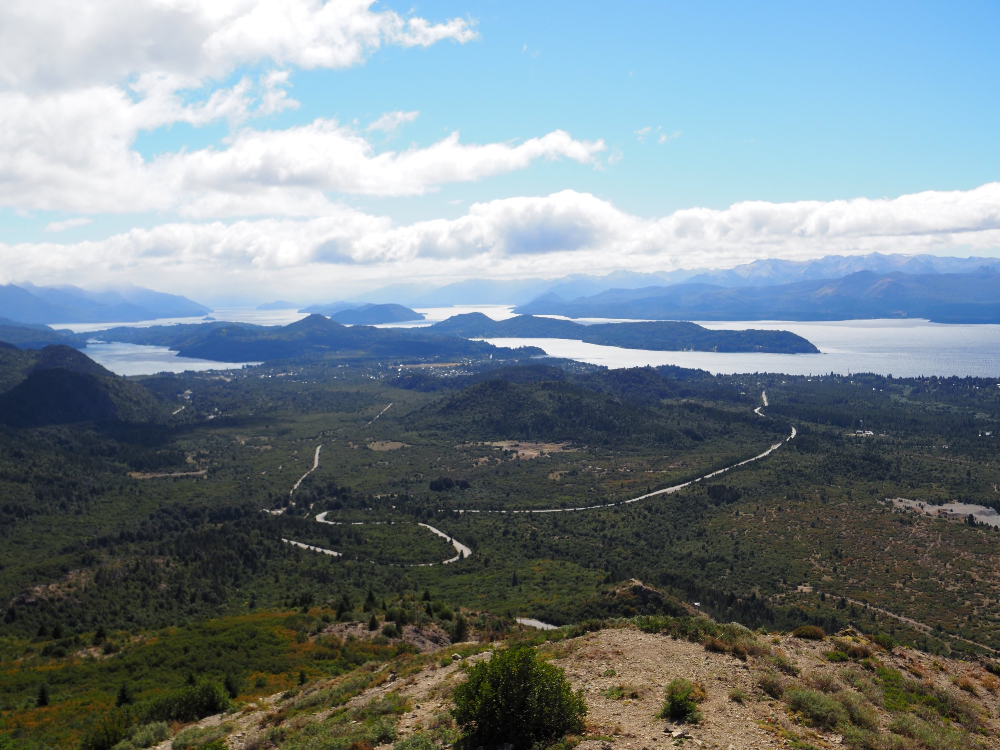
We came back for round two of the Refugio Frey two days later, but this time going around the mountain which was a beautiful and “non-technical” hike. We loved watching the climbers who were scaling a peak near Frey. We also went around the lake that Frey sits next to to scout out the end of the “up and over” hiking path — we learned later that the more nerve-wracking parts of the hike were the descents down to two alpine lakes that are essentially “find a path that looks the least bad.”
>
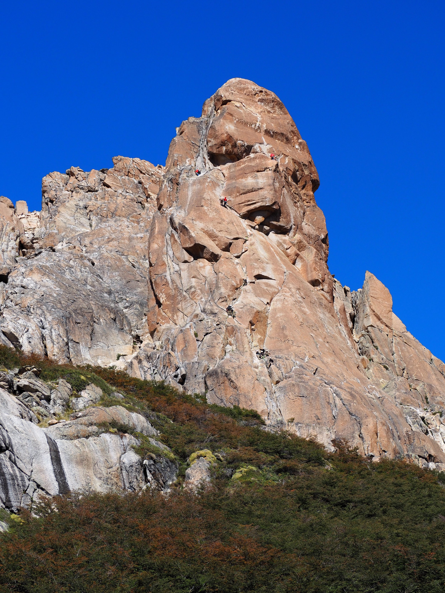
>

The last hike we did in Bariloche proper between Cerro San Martín and round of Refugio Frey was a hike to Laguna Negra, a beautiful alpine lake with a path that took us through forests, through valleys with waterfalls and towering stone, and finally to a refugio (Refugio Italia) that looked almost surreally placed next to a dark lake.
>
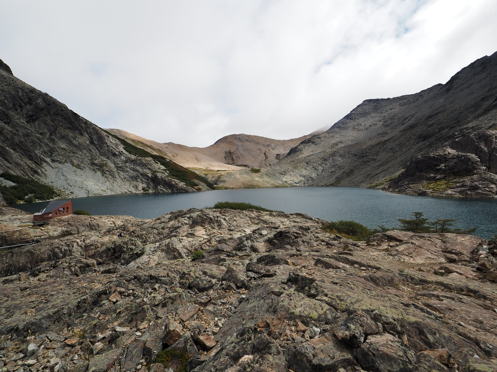
>
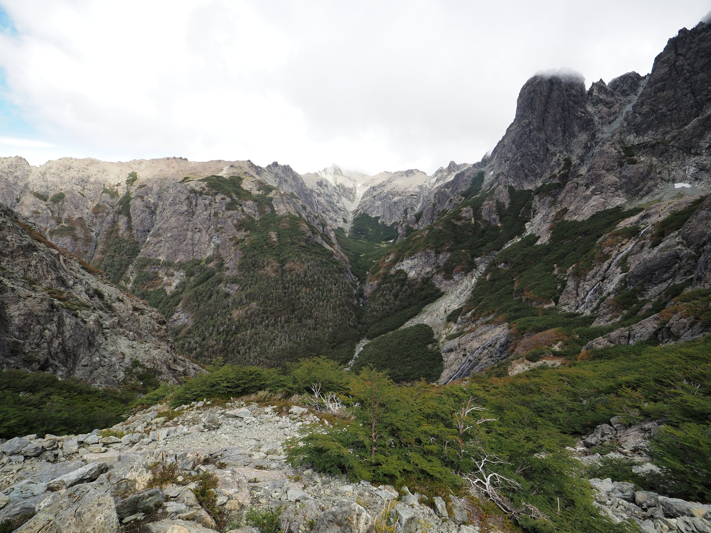
It’s hard to believe I’m saying this but I felt like we could have spent more time in Bariloche; the hikes surprised us with their variance and difficulty and there was a list of things that I would love to come back to try. The endless opportunities to hike to refugios that look like they’d been plopped into the most unexpected of locations makes every hike unique. And we didn’t really even graze the vast water activities that are available more in the peak of summer like kayaking and rafting (including overnight trips)! Alas, Patagonia is vast and we decided to continue to move on to explore other areas of Patagonia! I guess it just means we’ll have to come back again someday!
>
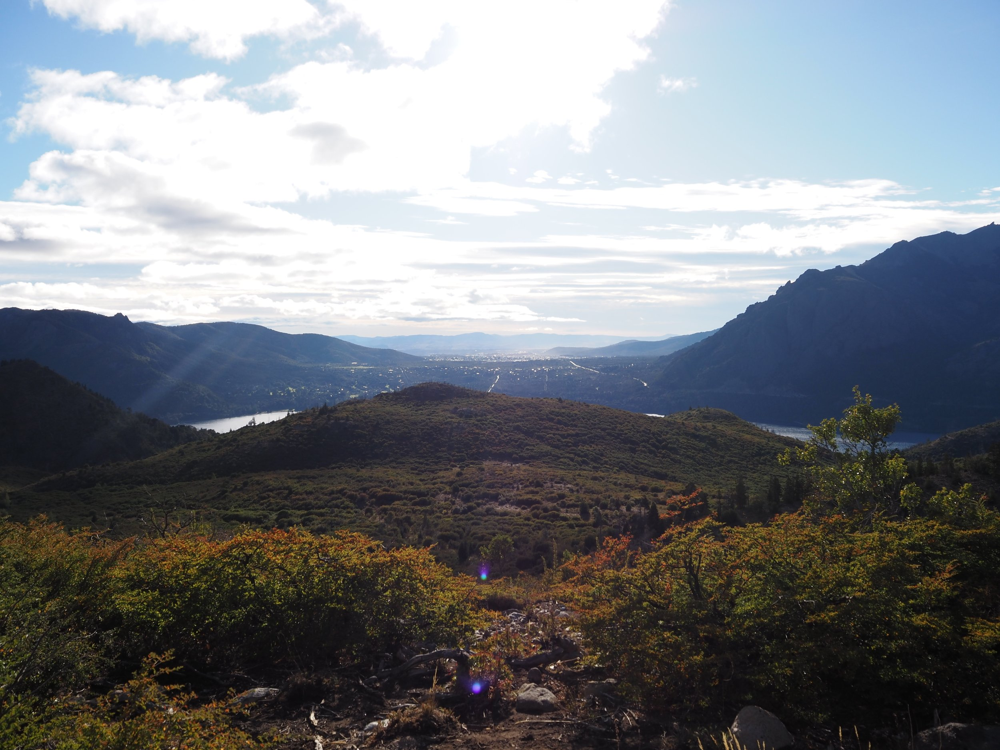
Things we loved:
-
This bike company to rent bikes to complete Circuito Chico.
-
Rapa Nui chocolate shop: we went here twice and it has an ice rink in the back! We loved the cocoa nibs, 80% chocolate bar, and their chocolate mousse alfajores.
-
Patagonia Masajes: on a rainy day, I got a massage and more than my legs, my masseuse asked me why I had so many knots in my upper back and neck. I guess they haven’t quite disappeared yet from hunching over my computer for endless hours a day!
-
Pizzeria LaTana: really good pizza!
-
Truino: any grocery store that sells peanut butter and soy sauce is a massive win in my book (these days).
Things we would love to do another time:
-
Otto Meiling: there is a 2 night hike that is possible to do starting from Pampa Linda that first takes you to the base of Tronodor (Refugio Otto Meiling), hike across Glaciar Alcere to Refugio Agostino Rocca, and then back down to Pampa Linda. You need good weather all three days to do this but we used up our three days with the hikes described in the post.
-
4 Refugios trek: if I got more comfortable with technical hikes, there is a 5 day, 4 refugios hike that is one of the best in the area. There are parts of this hike where folks mentioned that they would have felt more comfortable if they had some rope given the amount of scrambling, but it sounds like a really cool experience. Refugio Frey is one of the refugios on this hike.